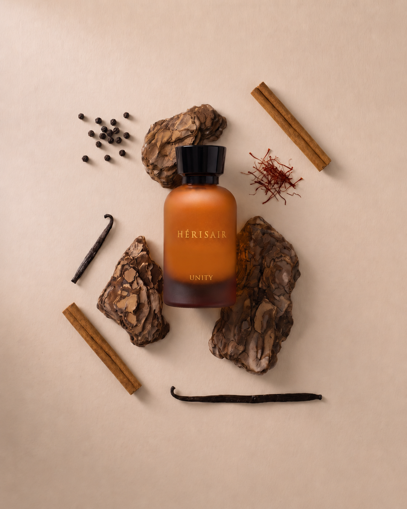

The Awakening
Before the rise
came unity.
A quiet desert before dawn, serene and boundless. Warm spice, leather and oud awaken a spirit rooted in heritage, guided by vision and composed in quiet strength.

The composition
Oud · Amber · Spicy
- Top
- Tobacco · Cinnamon · Black Pepper · Saffron
- Heart
- Bergamot · Cumin · Leather · Bulgarian Rose
- Base
- Vanilla · Cedar · Oud · Osmanthus
The formulation
The Hérisair Signature
An alcohol-free milky emulsion, composed for the intimacy of the car.
Discover Ascent